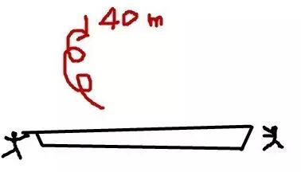
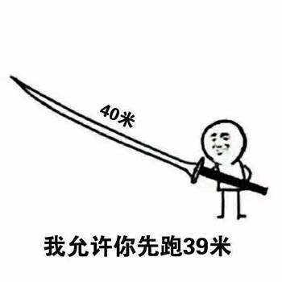

正则趣谈
前两天朋友考我一个正则问题，说写个正则匹配字符串，该字符串必须有且仅有数字和英文字母。
我琢磨了“半天”写成了下面这样:
^[A-Za-z0-9]*(([A-Za-z]+\d+)|(\d+[A-Za-z]+))[A-Za-z0-9]*$
解释: 头部和尾部的 [A-Za-z0-9]* 表示任意数量的字母或数字，不关心排列情况；中间的 (([A-Za-z]+\d+)|(\d+[A-Za-z]+)) 表示至少存在一对字母+数字组合，要么字母在前要么数字在前，通过这些条件来保证符合要求
后来他告诉我可以这样的:
^(?=.*[A-Za-z])(?=.*[0-9])[a-zA-Z0-9]+$
解释: (?=...) 表示向后查看有满足条件的 ... 但不消耗字符, 所以 (?=.*[A-Za-z]) 确保了字符串里有字母， (?=.*[0-9]) 确保了字符串里有数字， [a-zA-Z0-9]+ 确保了该字符串仅是由多个字母或者数字组成。
怪我对正则匹配的各个方法不熟悉，当我看到答案使用 (?=...) 这个“高级”的匹配功能的时候，感觉就像打pk游戏对手开挂一样，我拿大刀，对手用AK。朋友打趣：“其实你用40米长大刀也有可能赢”。看着我写的正则表达式长度，真觉得有点契合;)
 